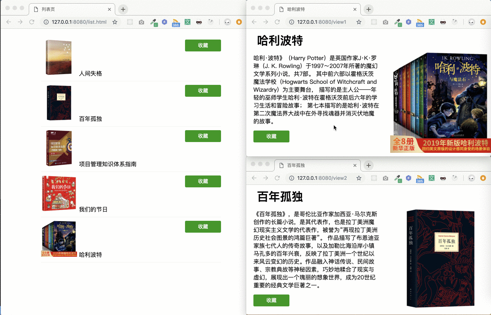

在浏览器中，我们可以同时打开多个Tab页，每个Tab页可以粗略理解为一个“独立”的运行环境，即使是全局对象也不会在多个Tab间共享。然而有些时候，我们希望能在这些“独立”的Tab页面之间同步页面的数据、信息或状态。
正如下面这个例子：我在列表页点击“收藏”后，对应的详情页按钮会自动更新为“已收藏”状态；类似的，在详情页点击“收藏”后，列表页中按钮也会更新。

作者：AlienZHOU 链接：https://juejin.cn/post/6844903811232825357 来源：掘金 著作权归作者所有。商业转载请联系作者获得授权，非商业转载请注明出处。